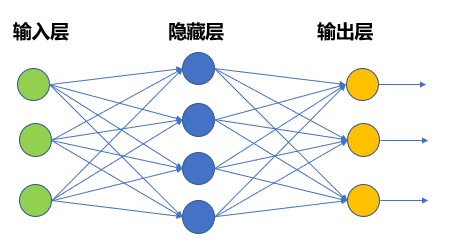

AI 動作原理
こう思うかもしれません。「AI を使いたいだけなのに、なぜ仕組みを理解する必要があるのか？」
理由は簡単です。AI の能力がどこから来るのかを知れば、より上手に使えるようになるからです。
いつ信じるべきか、いつ疑うべきかが分かります。
-
何が得意で、何が苦手かが分かります。
-
幻覚がどこから来るのか、そしてその影響をどう減らすかが分かります。
ニューラルネットワークの直感的理解
現代の AI の中核はニューラルネットワークです。この名前は人間の脳のニューロン構造に由来します。
脳のニューロンとの類推
人間の脳には約860億個のニューロンがあり、それらは互いに接続して信号を伝達します。各ニューロンは他のニューロンから入力を受け取り、処理して、他のニューロンに出力します。学習のプロセスとは、これらの接続の強さを調整するプロセスです。
人工ニューラルネットワークはこの考え方を参考にしていますが、大幅に簡略化されています。
3層の基本構造
典型的なニューラルネットワークは3層に分かれます：入力層、隠れ層、出力層です。

画像が猫か犬かを識別する例で考えてみましょう。

| 階層 | 役割 | この例では |
|---|---|---|
| 入力層 | 生データを受け取る | 画像の各ピクセル、色情報 |
| 隠れ層 | 層ごとに特徴を抽出する | エッジ → テクスチャ → 耳、目などの器官 |
| 出力層 | 最終結果を出力する | 「猫の確率85%」、「犬の確率15%」 |
各層には多くのニューロンがあり、各ニューロンは前の層の出力を受け取り、少し簡単な計算を行い、次の層に渡します。
-
最初の層は、ここに縦線がある、ここに円がある、といったことを認識するかもしれません。
-
2番目の層はこれらを組み合わせます：縦線と円は、耳かもしれない。
-
3番目の層はさらに組み合わせます：尖った耳が2つ、ひげ、猫の目——これはおそらく猫です。
不思議なのは、これらの特徴は人間が設計したものではなく、モデルがデータから自分で学習したものだということです。
最も単純なニューロン
数行の Python コードで、ニューロンが何をしているかを見てみましょう。
実例
# 一個人エニューロンの基本計算ロジック
# 複雑な数学はなし、重み付き和 + 活性化だけ
# ============================================
def simple_neuron(inputs: list, weights: list, bias: float) -> float:
"""
最も単純なニューロン
inputs: 入力値（前の層のニューロンから）
weights: 重み（各入力の重要度。トレーニングで学習）
bias: バイアス（閾値。トレーニングで学習）
"""
# ステップ1：重み付き和
# 各入力に対応する重みを掛けて、合計する
weighted_sum = 0.0
for input_value, weight in zip(inputs, weights):
weighted_sum += input_value * weight
# バイアスを加える
weighted_sum += bias
# ステップ2：活性化関数（出力を非線形にする）
# ここでは最も簡単な ReLU を使う：負は0、正はそのまま
output = max(0.0, weighted_sum)
return output
# シミュレーション：「これは猫の耳かどうか」を判定するニューロン
# 入力：[尖り具合, 位置の高さ, 毛があるか]
inputs = [0.8, 0.9, 0.7] # この3つの特徴はどれも比較的はっきりしている
# 重み：トレーニング後に学習されたもの（runoob の例では、これらの値は学習済みと仮定）
weights = [0.5, 0.4, 0.3]
# バイアス：閾値
bias = -0.6
result = simple_neuron(inputs, weights, bias)
print(f"ニューロン出力：{result:.3f}")
print(f"判定：{'猫の耳の可能性が高い' if result > 0 else 'あまり似ていない'}")
# 出力：ニューロン出力：0.660
# 出力：判定：猫の耳の可能性が高い
このニューロンが行うことは非常に簡単です：入力の重み付き和を取り、活性化関数を通し、結果を出力します。
しかし、このようなニューロンが何千、何万とつながり、各層が異なる特徴を学習すると、全体として驚くべき知能が生まれます。
この直感を覚えておいてください：ニューラルネットワーク = 多くの単純な計算ユニットがつながり、接続の重みを調整することで学習するものです。
トレーニング vs 推論：2つの異なる段階
AI のライフサイクルは、完全に異なる2つの段階に分かれます：トレーニングと推論です。
この2つの段階の違いを理解すると、多くのことを理解できます——たとえば、なぜトレーニングはあんなに高価で、推論は比較的安いのか、などです。
トレーニング：AIに学習させる
トレーニングとは、モデルに大量のデータを見せ、パラメータを調整し続けて、予測がどんどん正確になるようにするプロセスです。
たとえば、猫と犬を識別するモデルをトレーニングする場合：
-
1. ラベル付けされた数百万枚の画像を用意する（これは猫、あれは犬）
-
2. モデルに「これは何か」と当てさせる。最初はたくさん間違える
-
3. 「間違えた、これは猫だ」と教え、ネットワーク内の重みを調整させる
-
4. モデルの予測がどんどん正確になるまで、これを数百万回繰り返す
トレーニング段階では、莫大な計算能力とデータが必要です。大規模モデルは、数千枚の GPU で数か月トレーニングし、数百万ドルかかることもあります。
推論：AIを使う
推論とは、トレーニング済みモデルに新しい入力を与え、出力を得るプロセスです。
ChatGPT にメッセージを送ると、返信が返ってくる——これが推論です。
スマホで写真を撮って植物を識別する——これも推論です。
推論の特徴は：
パラメータを調整する必要がなく、トレーニング済みの重みを使って計算するだけです。
-
通常、GPU 1枚か、スマホのチップでも実行できます。
-
コストはトレーニングよりはるかに低いです。
両者の比較
| 次元 | トレーニング | 推論 |
|---|---|---|
| 目標 | 知識を学び、重みを調整する | 学んだ知識を適用し、答えを出す |
| データ量 | 膨大なデータが必要 | 1回の入力でよい |
| 計算能力の必要量 | 極めて高い（数千枚の GPU） | 比較的低い（GPU 1枚またはスマホ） |
| コスト | 極めて高い（数百万ドル規模） | 比較的低い（1回あたり数銭） |
| 頻度 | 数回または数十回 | 毎秒数百万回 |
| 誰が行うか | OpenAI、Anthropic などの企業 | 一般ユーザーまたはアプリ |
たとえるなら：トレーニングは「10年間の苦学」、推論は「試験会場で問題を解く」ようなものです。
読書には多くの時間と労力が必要ですが、一度学んでしまえば、問題を解くのは速くなります。
ChatGPT を使っているとき、あなたは「推論」を行っています——モデルはあなたとの会話で「学習」したり「賢くなったり」するわけではありません。その知識はトレーニングが完了した時点で止まっています。
Transformer アーキテクチャ入門
2017年、Google は論文『Attention Is All You Need』を発表し、Transformer アーキテクチャを提案しました。
この論文は AI 分野全体を変えました。今日の大規模言語モデルは、ほぼすべて Transformer に基づいています。
なぜ Transformer がそれほど重要なのか
Transformer 以前は、系列データ（たとえば文章）を処理するのに RNN や LSTM が使われていました。
それらの問題は、一語一語しか処理できず、長距離の関連性を捉えるのが難しいことでした。
たとえばこの文：「私は財布を北京のカフェに置き忘れ、翌日戻って探したら、____ はまだあった。」——空欄には「それ」が入ります。「財布」を指していると分かるのは、前の内容を覚えているからです。
旧モデルは「まだあった」を処理するとき、「財布」の存在を忘れているかもしれません。
Transformer の突破口は、それは文全体を同時に見ることができ、注意力メカニズムを通じて、どの単語に注目すべきかを知っています。
Encoder と Decoder
完全な Transformer は2つの部分に分かれています：
| コンポーネント | 役割 | 代表的な応用シーン |
|---|---|---|
| Encoder（エンコーダー） | 入力を理解し、テキストをベクトル表現に変換する | テキスト分類、感情分析、意味検索 |
| Decoder（デコーダー） | 理解に基づいて、出力テキストを生成する | 文章作成、翻訳、対話生成 |
一部のモデルは Encoder のみを使用し（例：BERT）、一部は Decoder のみを使用し（例：GPT）、一部は両方を使用します（例：T5）。
GPT シリーズ、Claude、Llama はすべて「Decoder のみ」のアーキテクチャです。その強みは流暢なテキストを生成することです。
注意力メカニズムとは何か
注意力は Transformer の中核であり、長いテキストを処理できる鍵でもあります。
類推：人が読むときの注意力
あなたが一文を読むとき、すべての文字に同じ労力をかけるわけではありません。
例えば：「それには長い尾と三角形の耳があります」——「それ」を見たとき、あなたは「尾」と「耳」に重点的に注目して、何の動物かを判断します。
注意力メカニズムが行うのはまさにこのことです：現在処理している位置に基づいて、入力の中のどの単語に注目すべきかを動的に決定します。

アニメーションによるデモ：
各ステップで1つのことだけを行います：前の文に基づいて、次の文字を推測します
注意力はどのように計算されるか
簡単に言うと、各単語は3つのベクトルを生成します：
-
Query（クエリ）：私は何の情報を探しているのか？
-
Key（キー）：私は何の情報を含んでいるのか？
-
Value（バリュー）：私の実際の内容は何か？
各位置の Query とすべての位置の Key の類似度を計算して注意力重みを取得し、その重みを使って Value の重み付き和を取ると、その位置の出力が得られます。
詳細を覚える必要はありません。この直感だけ覚えておいてください：注意力 = 文中の各単語に重みを割り当て、現在の位置に対するその重要度を表すこと。
なぜ注意力がそれほど重要なのか
注意力にはいくつかの重要な利点があります：
-
第一に、長距離の依存関係を捉えることができます。2つの単語がどれだけ離れていても、関連していれば注意力で結びつけることができます。
-
第二に、並列計算が可能です。RNN のように1文字ずつ処理する必要はなく、文全体を同時に処理できます。
-
第三に、一定の解釈可能性があります。注意力重みを見ることで、モデルが何を見ているかを知ることができます。
例えば「それには長い尾があります」を翻訳するとき、モデルが「それ」を翻訳する際に注意力が主に「尾」に置かれているのを見ることができます。
事前学習とファインチューニング
今日の大規模モデルは通常、2段階のトレーニングを採用しています：事前学習 + ファインチューニング。
事前学習：膨大なデータで一般知識を学ぶ
事前学習はこうです：インターネット上の大量のテキスト（ウィキペディア、書籍、ウェブページ、コードなど）を見つけて、モデルに1つのことをさせます——次の単語を予測することです。
あなたが「今日の天気は本当に」と入力すると、次の単語が何かを推測させます。
-
あなたが「1 + 1 = 」と入力すると、次の単語が何かを推測させます。
このプロセスには特定のタスクはなく、モデルに言語、知識、論理、コードなどを幅広く学習させるだけです。
事前学習は最もコストがかかる部分です：データが多く、計算能力が大きく、時間がかかります。
ファインチューニング：特定タスク向けに最適化
事前学習後のモデルは非常に博識ですが、必ずしも言うことを聞くとは限りません。
あなたが質問しても、直接答えずに延々と話し続けるかもしれません。
コードを書かせても、半分書いたところで別のことを書き始めるかもしれません。
ファインチューニングとは、高品質な対話データを使用してモデルをさらに訓練し、次のことを学ばせることです：
-
指示を理解し、要求に従って出力する
-
対話スタイルを維持し、有害なリクエストを拒否する
-
より安全で、より有用な内容を出力する
-
ファインチューニングのデータ量は事前学習よりはるかに少ないですが、品質への要求はより高いです。
類推で理解する
-
事前学習は読書万巻のようなものです——小学校から大学まで、さまざまな知識を幅広く学びます。
-
ファインチューニングは職業訓練のようなものです——卒業後に会社で働き、同僚とのコミュニケーション方法、メールの書き方、仕事のタスクの完了方法を学びます。
事前学習はモデルに知識を与え、ファインチューニングはモデルを使いやすくします。
これが、同じ大規模モデルでも、賢いが使いにくいものもあれば、普通だが使いやすいものもある理由です——その違いはしばしばファインチューニングにあります。
AI が幻覚を起こす理由
幻覚（ハルシネーション）は AI の最も有名な問題の1つです：存在しない事実、人名、論文、データをもっともらしく作り上げます。
確率予測の観点から理解する
幻覚を理解するには、まず AI の最も本質的な動作方法に戻ります：
それは事実を検証しているのではなく、次に最も出現しそうな単語を予測しているのです。
あなたが尋ねます：電話を発明したのは誰？——それは知っていますアレクサンダー・グラハム・ベルこの単語の並びが最も出現しやすいのです。
しかしあなたが尋ねます：runoob チュートリアルを発明したのは誰？——訓練データにはこの情報がないかもしれませんが、モデルは統計的な規則に基づいて、もっともらしい名前を作り上げます。
それは自分が知らないことを知りません——この位置では、これらの単語が出現する確率が最も高いことだけを知っているのです。
幻覚が発生する一般的な原因
| 原因 | 説明 | 例 |
|---|---|---|
| 訓練データの不足 | このトピックは訓練データにほとんどなく、モデルがうまく学習できていない | 非常にニッチな専門的な質問をする |
| 知識のカットオフ | 訓練データのカットオフ後に起こったことは、モデルは知らない | 「2025年に何が起こったか」と尋ねる（モデルが2024年に訓練されたと仮定） |
| 情報源の混同 | 複数の情報源の情報を混ぜ合わせて、誤ってつなぎ合わせた | 「張三が論文Aを書いた」（実は李四が書いたが、張三と李四はよく一緒に出現する） |
| 過学習 | 訓練時にノイズを記憶し、事実として扱ってしまった | 存在しない引用を作り上げる |
幻覚の影響を減らす方法
ユーザーとして、次のようにすることができます：
-
第一に、重要な情報は検証しましょう。医療、法律、投資、ニュースの事実などに関わる場合は、必ず確認してください。
-
第二に、モデルに情報源を提示させましょう。「この情報の出典は何ですか？」「引用元を教えてもらえますか？」と尋ねます。
-
第三に、検索拡張生成（RAG）を使用します。自分のドキュメントをモデルに与えて、でたらめをでっち上げるのではなく、それらのドキュメントに基づいて回答させます。
-
第四に、複数のモデルで相互検証します。同じ質問をいくつかのモデルに尋ねて、それらがすべて同じことを言っていれば、信頼度はより高くなります。
その他の拡張覚えておいてください：AI が話すことは、どれほど本物らしく聞こえても、作り話である可能性があります。高リスクな意思決定には、常に疑いの目を持ちましょう。
クリックしてノートを共有
<p style="font-size:14px;">ノートは本記事の内容の拡張である必要があります！</p><br> <p style="font-size:12px;"><a href="../tougao.html" target="_blank">記事の投稿は、こちらをクリックしてください</a></p> <p style="font-size:14px;"><a href="../w3cnote/runoob-user-test-intro.html" target="_blank">登録招待コードの取得方法</a></p> <h3 class="text-muted"><i class="fa fa-info-circle" aria-hidden="true"></i> ノートを共有する前に<a href=";.html" class="runoob-pop">ログイン</a>が必要です！</h3> <p><a href="../w3cnote/runoob-user-test-intro.html" target="_blank">登録招待コードの取得方法</a></p>